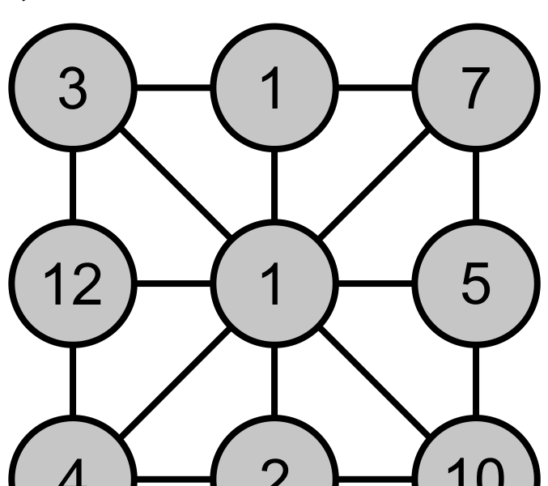

图中有一个数，等于与它直接相连的数之和。请问是哪一个？可选：3 / 5 / 7 / 10 / 12
One number equals the sum of numbers connected directly to it. Which? Choices: 3 / 5 / 7 / 10 / 12

点选 / 再点取消。选中 超过 2 个 时，右侧只帮你算「这些数的和」——对不对请自己想。
Tap to select / tap again to cancel. When more than 2 are selected, the panel only shows their sum — you judge.
题目选项：3 · 5 · 7 · 10 · 12 —— 想好就记下，本页不判对错
Choices: 3 · 5 · 7 · 10 · 12 — decide yourself; no check here